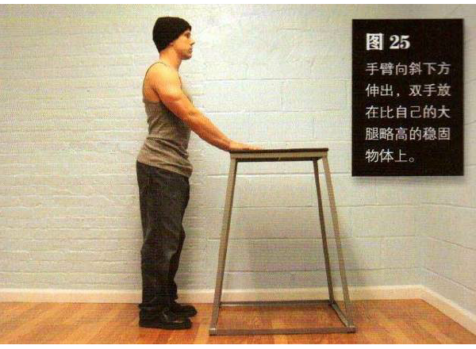
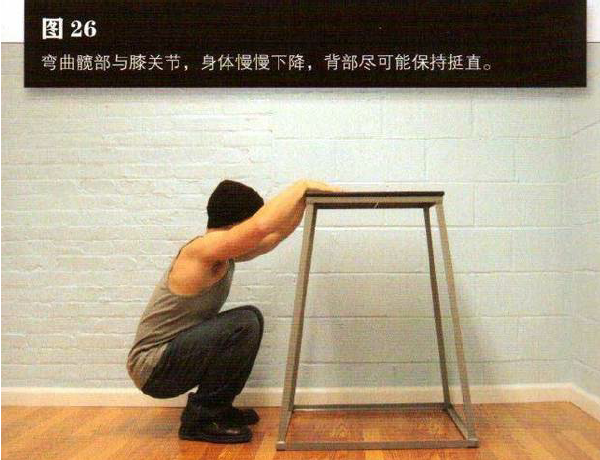

直立，双脚分开，与肩同宽或略宽。手臂向斜下方伸出，双手放在比自己的大腿略高的稳固物体上，书桌、高脚凳或椅背都可以
弯曲髋部与膝关节，身体慢慢下降，背部尽可能保持挺直，直到大腿后侧紧贴小腿，无法蹲得更低为止，这是该动作的最低点（图 26）。暂停一会，然后主要靠腿部发力站起来。为了分担双腿的一部分压力，尤其是在最低点时，你要通过向下按压面前的物体，来借用手臂的一部分力量。 手臂要尽量伸直，在整个动作过程中都不要让脚跟抬离地面。
初级标准：1 组，10 次
中级标准：2 组，各 15 次
高级标准：3 组，各 30 次